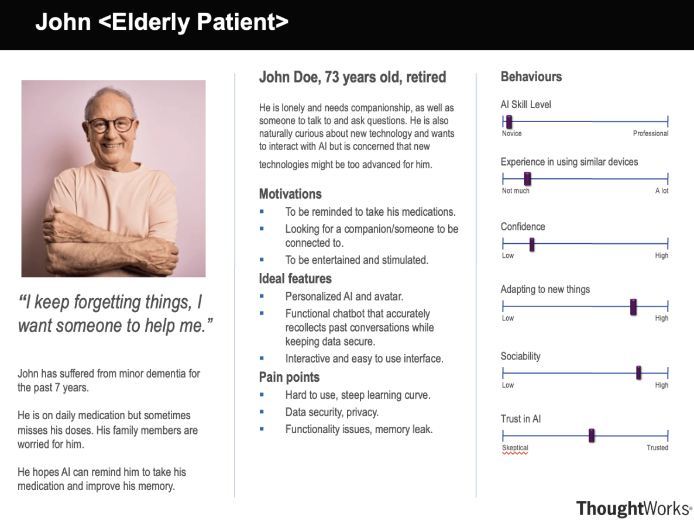
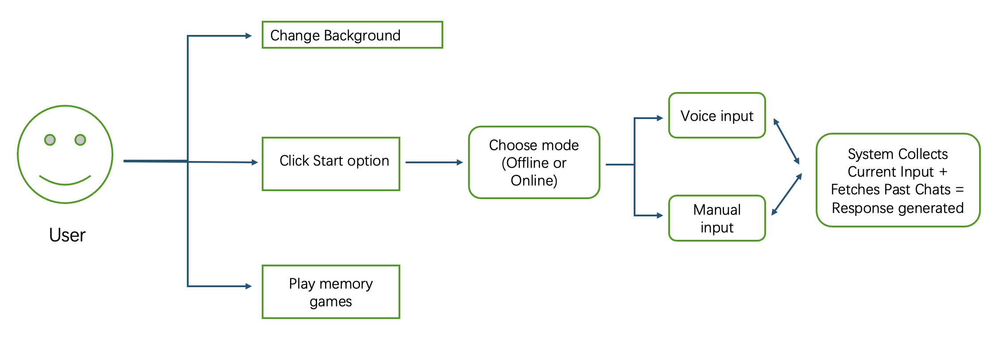

Avanade, a joint venture between Microsoft and Accenture, specializes in AI-driven enterprise solutions using Microsoft technologies. Through this collaboration, we leveraged Azure AI Search and cloud-based AI services to enhance chatbot capabilities, focusing on memory retention and intelligent responses. IBM, a leader in AI and enterprise technology, is exploring use cases for its Granite LLM in conversational AI. This project integrates IBM's LLM to improve long-term memory and user engagement in AI-driven interactions.
In today's world, increasing loneliness and cognitive decline, particularly among the elderly, highlight the need for AI companionship. Many struggle with forgetfulness, from recalling past conversations to remembering medication schedules. AI-driven solutions have the potential to provide meaningful support, but existing models often lack continuity, making interactions feel impersonal and repetitive. While short-term memory in AI can be managed with reference frames, long-term retention remains a challenge due to context window limitations, making it impractical to store every conversation.
This project explores long-term AI memory in conversational AI, comparing cloud-based solutions like Azure AI Search with local device storage using machine learning. Additionally, we integrate avatar-driven chatbot interfaces to make AI more engaging, particularly for elderly users. The solution offers both a powerful online version with highly efficient RAG-based memory and a free offline version that provides a lightweight yet functional alternative. By incorporating text-to-speech, speech-to-text, cognitive games for memory improvement, and a customizable UI, Companio aims to improve mental well-being, provide companionship, and redefine AI's role in healthcare and cognitive support.
Based on clients' discussion, Companio must include these core features to enhance user experience and functionality:
Our Companio chatbot is designed to support elderly users through intelligent conversation, memory assistance, and engaging interactions. The system enhances daily life by combining speech-based input/output, customizable avatars, and stable offline capabilities—ensuring accessibility even in environments with limited connectivity.
Built with a user-first approach, our solution uses a Retrieval-Augmented Generation (RAG) system to bring context-awareness to conversations and deliver meaningful responses based on past chat history. This results in a more personal and helpful experience that adapts over time.
The application is designed to run as a lightweight, offline desktop solution with an optional online upgrade path for advanced AI capabilities. With extensive testing, modular design, and support for deployment across major operating systems, the chatbot is both reliable and scalable for future growth.
| Productivity | Competencies | Functionality | |
|---|---|---|---|
| + | Personal reminders | Memory-aware interaction | Seamless voice + text input |
| - | Manual note-taking | Lack of personalization in UX | Cost |
Q: Do you think AI could help you in daily life?
A: I think so, yes. Sometimes I forget to take my pills, and my daughter always worries. If there's something that could remind me, that would be great. Also, I live alone, so having someone—or something—to talk to would make me feel less lonely.
Q: Do you have any concerns about using AI?
A: I'm not very good with new devices. I get confused if there are too many steps. And I don't want my private things to be shared. If the AI remembers what I say, I want to know it's safe and just for me.
Q: What features would you like the AI to have?
A: It should be simple. I'd like to just talk to it and have it remind me when to take my medicine. Maybe it can also help me remember what I talked about before. If it has a friendly face or voice, I think I'd enjoy using it more.
We built personas and scenarios to make us better understand our users' needs by using the information gained from the interviews.
Based on the views gathered from users, we developed a use case to demonstrate the practical application of our AI agent system.
Functional requirements define the core capabilities the system must deliver to ensure a consistent and engaging user experience.
In a project like ours—an AI-powered companion chatbot designed for accessibility and support, particularly for elderly users—non-functional requirements (NFRs) play a critical role.